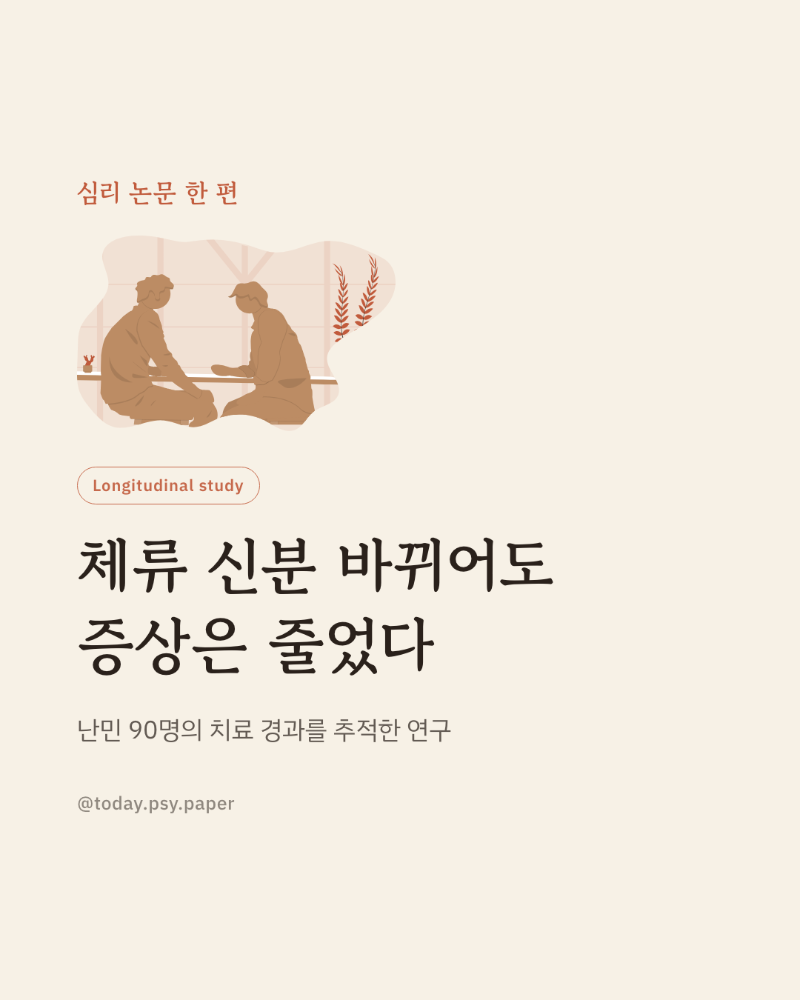
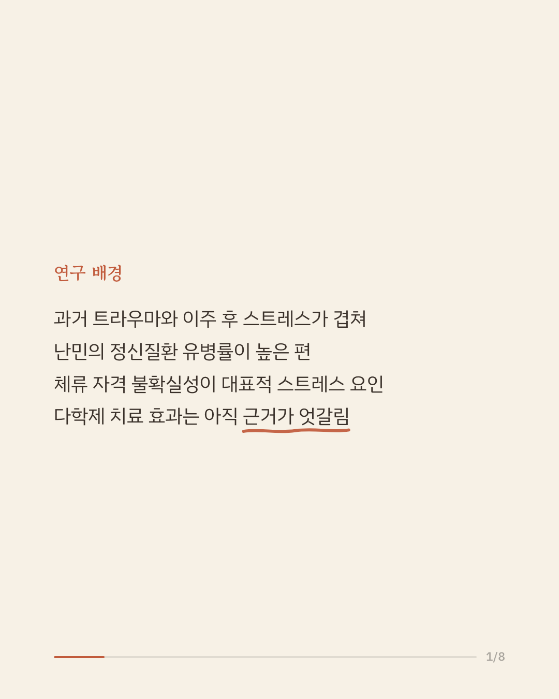
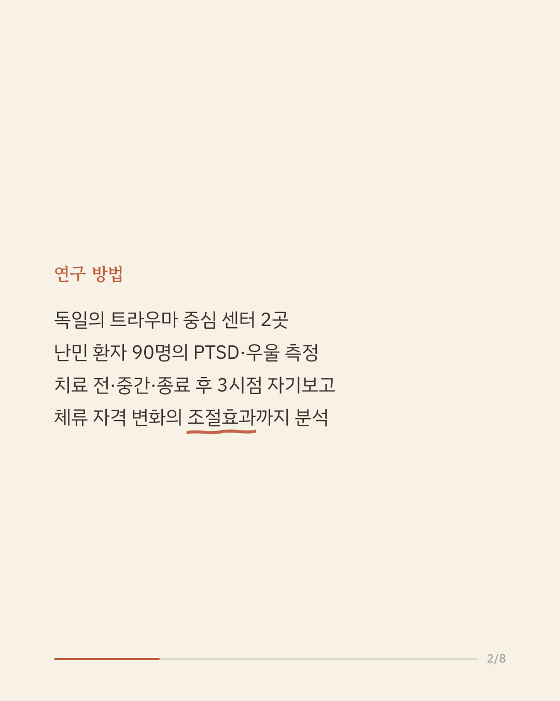
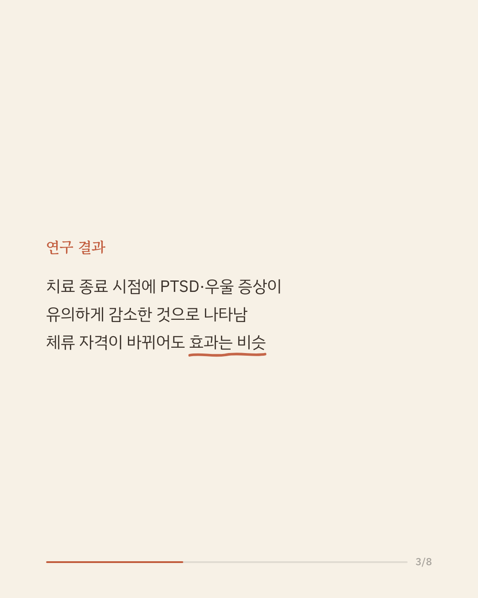
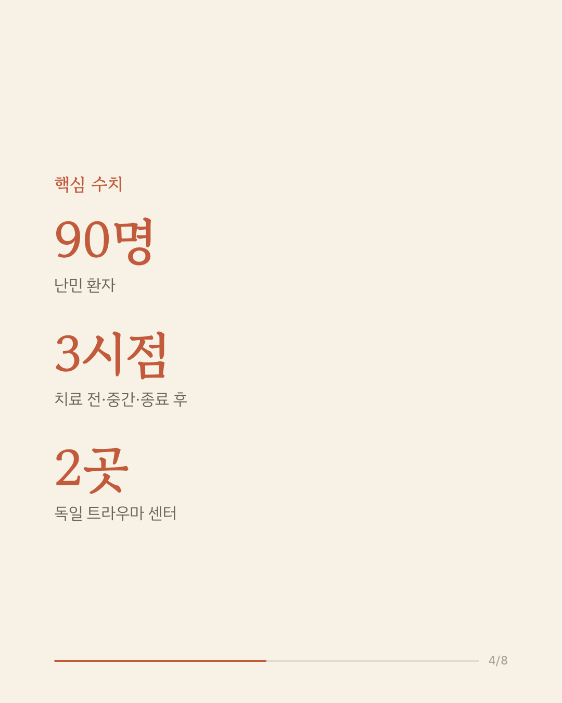
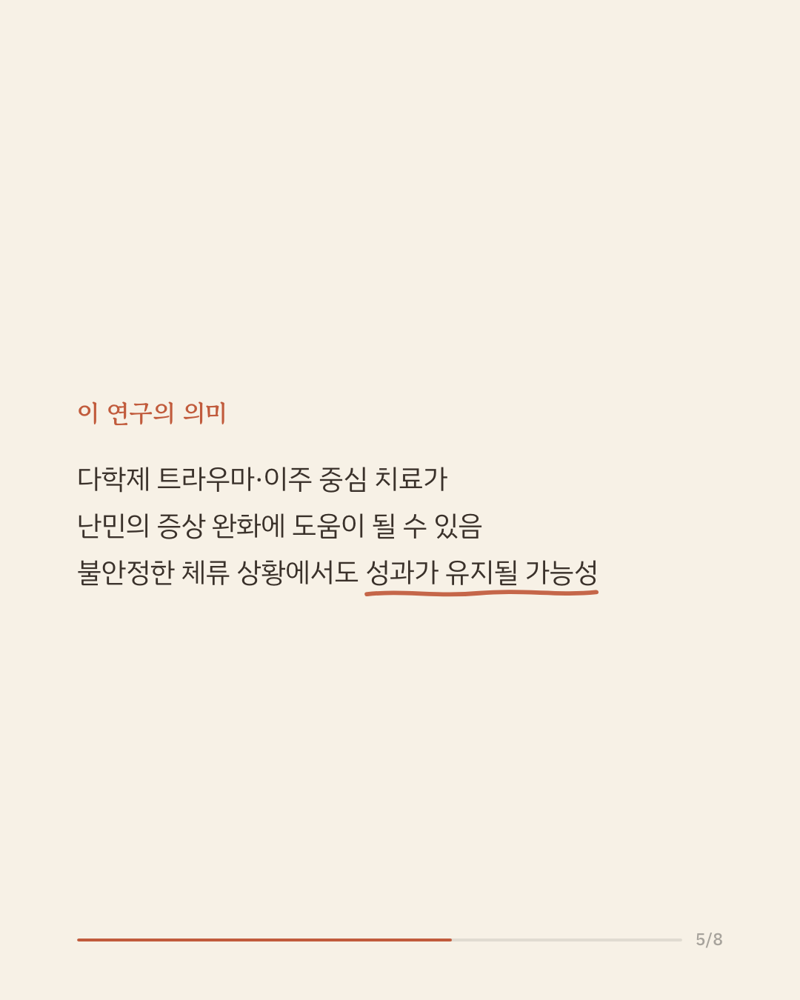
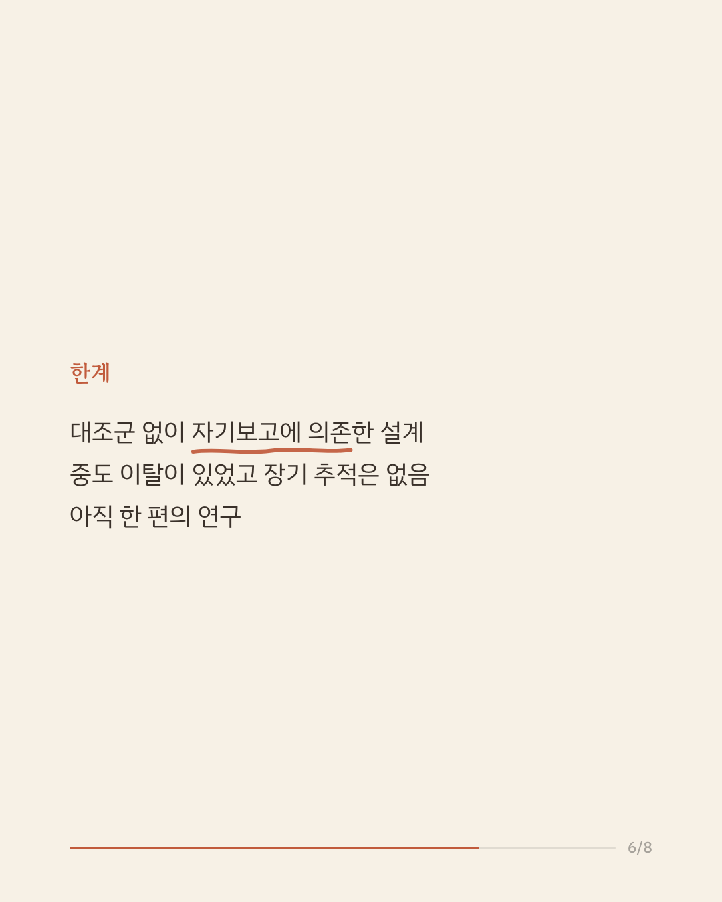
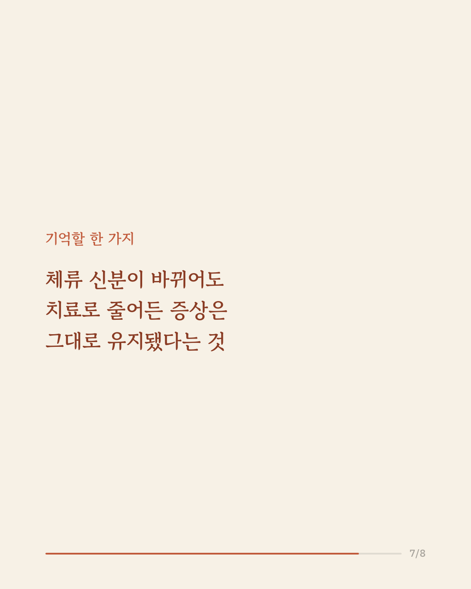
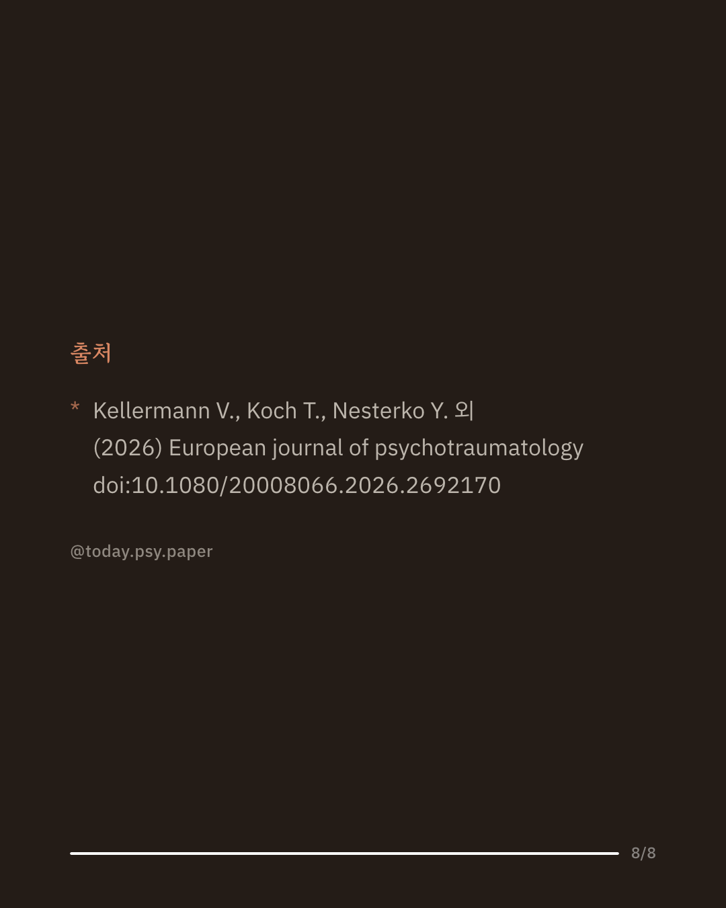

난민과 난민 신청자는 과거의 트라우마와 낯선 곳에서 겪는 이주 후 스트레스가 겹치면서 외상 후 스트레스 장애나 우울을 겪는 비율이 높습니다. 그중에서도 체류 자격이 언제 어떻게 정해질지 모르는 불확실성은 큰 부담으로 꼽혀 왔습니다. 독일의 두 심리사회 센터 연구진은 트라우마와 이주 문제를 함께 다루는 다학제 치료를 받은 난민 90명의 경과를 추적하고, 치료 도중 체류 자격이 바뀌는 것이 치료 효과에 영향을 주는지 살폈습니다. 치료 전, 중간, 종료 후 세 시점의 자기보고 설문을 선형 혼합 모형으로 분석한 결과, 치료가 끝난 시점에 외상 후 스트레스 장애와 우울 증상이 유의하게 줄어든 것으로 나타났습니다. 치료 기간 중 체류 자격의 변화는 치료 효과를 유의하게 바꾸는 요인으로 나타나지 않았습니다. 연구진은 다학제 치료가 난민의 트라우마 관련 증상을 줄이는 데 도움이 될 수 있으며, 그 효과가 불안정한 법적 상황에서도 어느 정도 유지될 가능성을 조심스럽게 시사한다고 보았습니다. 다만 대조군이 없고 자기보고에 의존했으며 중도 이탈이 있었고, 체류 안정이 장기 회복에 주는 효과는 확인되지 않았습니다. 단일 연구이므로 확대 해석은 조심해야 합니다. 출처: European Journal of Psychotraumatology (2026), 'Despite the obstacles: consistent treatment effects for traumatized refugees regardless of asylum status change' #임상심리 #정신건강정보 #난민정신건강 #트라우마치료 #외상후스트레스장애
python3 publish.py 42703887